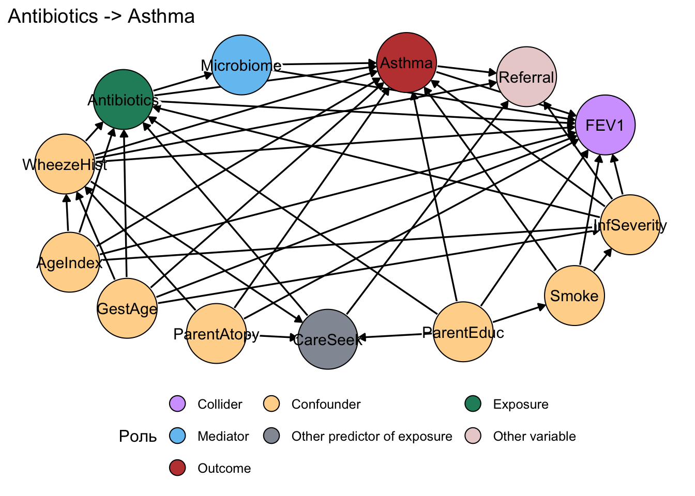
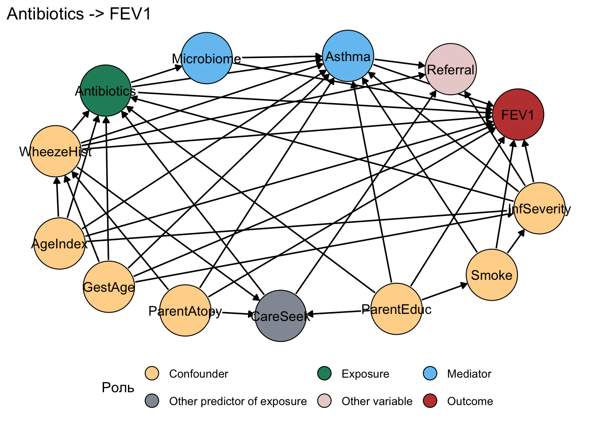
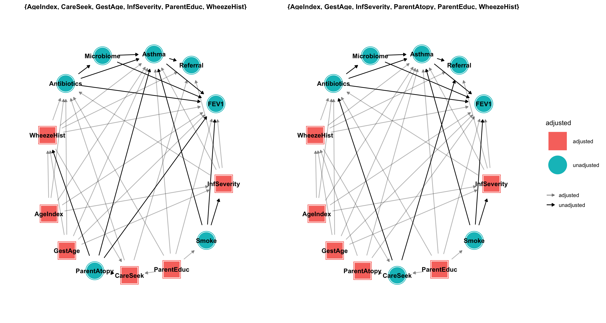

dag <- dagitty(
'dag{
AgeIndex [pos="2.682,1.201"]
Antibiotics [exposure,pos="2.738,1.879"]
Asthma [outcome,pos="3.033,2.033"]
CareSeek [pos="2.951,0.880"]
FEV1 [outcome,pos="3.240,1.773"]
GestAge [pos="2.742,1.009"]
InfSeverity [pos="3.266,1.357"]
Microbiome [pos="2.861,2.023"]
ParentAtopy [pos="2.835,0.904"]
ParentEduc [pos="3.092,0.911"]
Referral [pos="3.158,1.974"]
Smoke [pos="3.208,1.062"]
WheezeHist [pos="2.677,1.610"]
AgeIndex -> Antibiotics
AgeIndex -> Asthma
AgeIndex -> FEV1
AgeIndex -> WheezeHist
AgeIndex -> InfSeverity
Antibiotics -> Asthma
Antibiotics -> FEV1
Antibiotics -> Microbiome
Asthma -> FEV1
Asthma -> Referral
CareSeek -> Antibiotics
CareSeek -> Referral
GestAge -> Antibiotics
GestAge -> Asthma
GestAge -> FEV1
GestAge -> InfSeverity
GestAge -> WheezeHist
InfSeverity -> Antibiotics
InfSeverity -> Referral
InfSeverity -> Asthma
InfSeverity -> FEV1
Microbiome -> Asthma
Microbiome -> FEV1
ParentAtopy -> Asthma
ParentAtopy -> CareSeek
ParentAtopy -> FEV1
ParentAtopy -> WheezeHist
ParentEduc -> Antibiotics
ParentEduc -> Asthma
ParentEduc -> CareSeek
ParentEduc -> FEV1
ParentEduc -> Smoke
Smoke -> Asthma
Smoke -> FEV1
Smoke -> InfSeverity
WheezeHist -> Antibiotics
WheezeHist -> CareSeek
WheezeHist -> Referral
WheezeHist -> Asthma
WheezeHist -> FEV1
}'
)
confounders <- c(
"WheezeHist",
"AgeIndex",
"GestAge",
"ParentAtopy",
"ParentEduc",
"Smoke",
"InfSeverity"
)
dag_colors <- c(
"Exposure" = "#228c69",
"Outcome" = "#c14440",
"Confounder" = "#ffd699",
"Mediator" = "#75c4f2",
"Collider" = "#d3a5fe",
"Other predictor of exposure" = "#9299A3",
"Other variable" = "#ead1d1"
)1. DAG и отбор ковариат
1. Исследовательский вопрос с точки зрения причинно-следственного вывода
Исследовательский вопрос
Какой эффект дает назначения антибиотика (АБ) в раннем детстве при первом эпизоде ОРИ на функцию легких и наличие астмы к 8 годам?
Целевая популяция
Дети у которых возник первый зарегистрированный эпизод ОРИ с кашлем или затрудненным дыханием в возрасте 6-24 месяцев. Наблюдение до периода обучения в начальной школе (8 лет). Основные критерии включения:
- Начало первого в жизни ребёнка зарегистрированного эпизода ОРИ с кашлем или затруднённым дыханием в возрасте от 6 до 24 месяцев
- Наличие информированного согласия родителя или опекуна
Воздействие
Назначение антибиотиков при лечении рассматриваемой выше респираторной инфекции.
Операционализация воздействия:
- 1 – антибиотик назначен
- 0 – антибиотик не назначен
Исходы
- Наличие астмы у ребенка в 8-летнем возрасте
Операционализация: устанавливается по заранее определённым критериям исследования в ходе регулярных обследований в дошкольном и начальном школьном возрасте, независимо от того, был ли ребёнок направлен для этого к профильному специалисту (аллергологу, иммунологу, пульмонологу) или нет
Эстиманд: разность вероятностей наличия астмы в возрасте 8 лет при назначении антибиотиков всем детям и неназначении антибиотиков никому из детей \[P(\text{астма при лечении с антибиотиками}) - P(\text{астма при лечении без антибиотиков})\]
- Функция легких спирометрия с помощью оценки объема форсированного выдоха за первую секунду (\(FEV1\))
Операционализация: Z-оценка: \[z_i = \frac{x_i-m_i}{s_i} ,\] где
\(x\) – \(FEV1\) в литрах, полученное по данным ребёнка \(i\), включённого в исследование
\(m\) – среднее значение \(FEV1\) в литрах для здоровых детей такого же пола, возраста и роста, как ребёнок \(i\)
\(s\) – стандартное отклонение \(FEV1\) в литрах для этих здоровых детей
Эстиманд: разность средних значений z-оценки \(FEV1\) при назначении антибиотиков всем детям и неназначении антибиотиков никому из детей \[E(z_{FEV1} \text{ при лечении с антибиотиками}) - E(z_{FEV1} \text{при лечении без антибиотиков})\]
Задание 2
Для каждой пары ``воздействие → исход’’ укажите роль каждой переменной на DAG в этой причинно-следственной связи (конфаундер, прокси-конфаундер, коллайдер, медиатор, прочие предикторы воздействия, прочие предикторы исхода, прочие переменные) и приведите краткое обоснование для этого.
1. Пара Antibiotics -> FEV1
Конфаундеры: WheezeHist (путь WheezeHist -> Antibiotics и WheezeHist -> FEV1) - общая причина
Наличие свистящего дыхания до индексного эпизода - может быть показанием для назначения АБ и приводить к нарушению функции легких
AgeIndex (путь AgeIndex -> Antibiotics и AgeIndex-> FEV1) - общая причина
Возраст ребёнка при индексном эпизоде. Влияет на решение врача назначить АБ и на нарушение функции легких
GestAge (путь GestAge -> Antibiotics и GestAge-> -> FEV1) - общая причина
Гестационный возраст при рождении Недоношенность может быть связана с назначениемм АБ и с нарушением функции легких
ParentAtopy (путь ParentAtopy -> WheezeHist -> Antibiotics и ParentAtopy -> FEV1) - общая причина
Астма, аллергический ринит или атопический дерматит хотя бы у одного из родителей, диагностированные до рождения ребёнка - влияет на наличие свистящего дыхания, которое может быть показанием для назначения АБ
Напрямую влияет на нарушение функции легких
ParentEduc (путь ParentEduc -> Antibiotics и ParentEduc -> FEV1) - общая причина
Образование основного ухаживающего за ребёнком взрослого. Может влиять на условия жизни, приверженность к медицинскому вмешательству (назначению АБ)
Smoke (путь Smoke -> InfSeverity -> Antibiotics и Smoke -> FEV1, InfSeverity -> FEV1) - общая причина
Курение матери или кого-либо из проживающих с ребенком взрослого от рождения до индексного эпизода
Пассивное курение влияет на назначение антибиотиков опосредованно через InfSeverity, напрямую влияет на нарушение функции легких
InfSeverity (InfSeverity -> Antibiotics и InfSeverity -> FEV1) - общая причина
Тяжесть индексной инфекции, оценённая лечащим врачом до решения о назначении АБ в соответствии со шкалой ВОЗ IMCI
Тяжесть инфекции определяет назначение АБ и связана с риском нарушения функции легких
Медиаторы:
Microbiome (путь Antibiotics -> Microbiome -> FEV1)
Изменение микробиома - следствие приема АБ, которое, в свою очередь, влияет на функцию легких
Asthma (путь Antibiotics -> Microbiome -> Asthma -> FEV1)
АБ могут повышать риск астмы через изменение микробиома, а астма приводит к нарушению функции легких
Прочие предикторы воздействия:
CareSeek- (путь CareSeek -> Antibiotics) причина только для АБ
Склонность семьи обращаться за медицинской помощью
Прочие переменные (потомок воздействия):
Referral -следствие только для антибиотиков (путь Antibiotics -> Microbiome -> Asthma -> Referral)
Направление к профильному специалисту по поводу респираторных симптомов между индексным эпизодом и оценкой исходов
2. Пара Antibiotics -> Asthma
Конфаундеры: WheezeHist (путь WheezeHist -> Antibiotics и WheezeHist -> Asthma) - общая причина
Наличие свистящего дыхания до индексного эпизода - может быть показанием для назначения АБ и приводить к астме
AgeIndex (путь AgeIndex -> Antibiotics и AgeIndex-> Asthma) - общая причина
Возраст ребёнка при индексном эпизоде. Влияет на решение врача назначить АБ и на наличие астмы
GestAge (путь GestAge -> Antibiotics и GestAge-> -> Asthma) - общая причина
Гестационный возраст при рождении
Недоношенность может быть связана с назначениемм АБ и с развитием астмы
ParentAtopy (путь ParentAtopy -> WheezeHist -> Antibiotics и ParentAtopy -> Asthma) - общая причина
Астма, аллергический ринит или атопический дерматит хотя бы у одного из родителей, диагностированные до рождения ребёнка - влияет на наличие свистящего дыхания, которое может быть показанием для назначения АБ
Напрямую влияет на развитие астмы
ParentEduc (путь ParentEduc -> Antibiotics и ParentEduc -> Asthma) - общая причина
Образование основного ухаживающего за ребёнком взрослого. Может влиять на условия жизни, приверженность к медицинскому вмешательству (назначению АБ)
Smoke (путь Smoke -> InfSeverity -> Antibiotics и Smoke -> Asthma) - общая причина
Курение матери или кого-либо из проживающих с ребенком взрослого от рождения до индексного эпизода
Пассивное курение влияет на назначение антибиотиков опосредованно через InfSeverity, напрямую влияет на развитие астмы
InfSeverity (InfSeverity -> Antibiotics и InfSeverity -> Asthma) - общая причина
Тяжесть индексной инфекции, оценённая лечащим врачом до решения о назначении АБ в соответствии со шкалой ВОЗ IMCI
Тяжесть инфекции определяет назначение АБ и связана с риском развития астмы
Медиаторы: Microbiome (путь Antibiotics -> Microbiome -> Asthma)
Изменение микробиома - следствие приема АБ, которое, в свою очередь, влияет на развитие астмы
Коллайдеры: FEV1 (путь Antibiotics -> FEV1 <- Asthma)
FEV1 является следствием и назначения антибиотиков, и наличия астмы
Прочие переменные (потомок исхода):
Referral -следствие астмы (путь Asthma -> Referral)
Направление к профильному специалисту по поводу респираторных симптомов между индексным эпизодом и оценкой исходов
3. DAG, визуально отражающий роль каждой переменной в анализе данной причинно-следственной связи
draw_dag <- function(dag, outcome_name) {
dag_data <- tidy_dagitty(dag)
nodes <- dag_data |>
distinct(name, .keep_all = TRUE) |>
mutate(
role = case_when(
name == "Antibiotics" ~ "Exposure",
name == outcome_name ~ "Outcome",
name %in% confounders ~ "Confounder",
name == "Microbiome" ~ "Mediator",
outcome_name == "FEV1" & name == "Asthma" ~ "Mediator",
outcome_name == "Asthma" & name == "FEV1" ~ "Collider",
name == "CareSeek" ~ "Other predictor of exposure",
TRUE ~ "Other variable"
)
)
p <- ggdag(dag) +
geom_point(
data = nodes,
aes(x = x, y = y, fill = role),
shape = 21,
size = 20
) +
geom_text(
data = nodes,
aes(x = x, y = y, label = name),
size = 4,
) +
scale_fill_manual(
name = "Роль",
values = dag_colors,
guide = guide_legend(
ncol = 3,
byrow = TRUE,
override.aes = list(size = 5)
)
) +
theme_dag() +
theme(legend.position = "bottom") +
ggtitle(paste("Antibiotics ->", outcome_name))
return(p + coord_cartesian(clip = "off"))
}dag_asthma <- dag
draw_dag(dag_asthma, "Asthma")
dag_fev1 <- dag
draw_dag(dag_fev1, "FEV1")
Задание 4
С помощью функций пакета dagitty(adjustmentSets), или ggdag(dag_adjustment_sets, ggdag_adjustment_set), или онлайн-приложения DAGitty определите минимальный набор ковариат, необходимый для оценки общего (total) эффекта антибиотика на каждый из двух исходов.
Для переменных, которые войдут в минимальный набор, опишите, каким может быть механизм их связи с воздействием и исходом. Почему их включение в соответствующую модель является, с вашей точки зрения обязательным? Что будет с оценкой интересующего исследователей эффекта, если тот или иной показатель не будет включен в модель
Antibiotics -> FEV1
dag_FEV1 <- dagadjustmentSets(
dag_FEV1,
exposure = "Antibiotics",
outcome = "FEV1",
effect = "total"
){ AgeIndex, GestAge, InfSeverity, ParentAtopy, ParentEduc, WheezeHist }
{ AgeIndex, CareSeek, GestAge, InfSeverity, ParentEduc, WheezeHist }ggdag_adjustment_set(
dag_FEV1,
exposure = "Antibiotics",
outcome = "FEV1",
shadow = TRUE,
node_size = 15,
text_size = 4,
text_col = "black",
stylized = TRUE
) +
theme_dag()
Минимальный набор для FEV1:
{ AgeIndex, GestAge, InfSeverity, ParentAtopy, ParentEduc, WheezeHist}
{ AgeIndex, CareSeek, GestAge, InfSeverity, ParentEduc, WheezeHist}
Antibiotics -> Asthma
dag_Asthma <- dagadjustmentSets(
dag_Asthma,
exposure = "Antibiotics",
outcome = "Asthma",
effect = "total"
){ AgeIndex, GestAge, InfSeverity, ParentAtopy, ParentEduc, WheezeHist }
{ AgeIndex, CareSeek, GestAge, InfSeverity, ParentEduc, WheezeHist }ggdag_adjustment_set(
dag_Asthma,
exposure = "Antibiotics",
outcome = "Asthma",
shadow = TRUE,
node_size = 15,
text_size = 4,
text_col = "black",
stylized = TRUE
) +
theme_dag()
Минимальные наборы для Asthma:
{ AgeIndex, GestAge, InfSeverity, ParentAtopy, ParentEduc, WheezeHist }
{ AgeIndex, CareSeek, GestAge, InfSeverity, ParentEduc, WheezeHist }
Механизм связи с воздействием и исходом:
AgeIndex -
Возраст ребёнка при индексном эпизоде. Возраст может влиять на решение врача назначить АБ. Вероятно, маленьким детям АБ назначают чаще из-за того, что у них тяжелее протекает инфекция в связи с тем, что у них менее сформирована иммунная система по сравнению с более старшими детьми. Функция легких и риск астмы зависит от возраста (с возрастом объем легких меняется, а для развития астмы необходим триггер(аллерген), риск встретить которого увеличивается с возрастом). Если не учитывать возраст, это приведет к смещению из-за различий в возрасте
GestAge -
Гестационный возраст при рождении.
Недоношенность может приводить к большей предрасположенности к инфекциям или к их более тяжелому протеканию, поэтому АБ таким детям могут назначаться чаще. Также недоношенность может быть причиной нарушения развития легких, что приводит к нарушению их функции и может способствовать развитию астмы. Неучет может привести к смещению в сторону вреда АБ
InfSeverity -
Тяжесть индексной инфекции, оценённая лечащим врачом до решения о назначении АБ в соответствии со шкалой ВОЗ IMCI. Тяжесть инфекции напрямую определяет как решение о назначении АБ, так и риск нарушения функции лёгких и астмы. Важный конфаундер, без него - сильное смещение в сторону вреда АБ (дети с тяжелым протеканием инфекции чаще получают АБ и исход болезни у них более разрушительный)
CareSeek или ParentAtopy -
ParentAtopy
Астма, аллергический ринит или атопический дерматит хотя бы у одного из родителей, диагностированные до рождения ребёнка. Является конфаундером. Вероятно, что здесь может сыграть генетический фактор и ребенок унаследует предрасположенность к астме и пр., что приводит к нарушению функции легких
CareSeek- (путь CareSeek -> Antibiotics) причина только для АБ
Склонность семьи обращаться за медицинской помощью. Не является конфаундером ни для одного из исходов, поэтому выбор набора с ParentAtopy более предпочтителен
ParentEduc -
Образование основного ухаживающего за ребёнком взрослого. Образование связано с условиями жизни (н-р, курение в доме), приверженностью, доступом к медицинской помощи. Конфаундер, если его не учитывать оценка будет смещенной из-за неучета социально-экономического фактора
WheezeHist -
Наличие свистящего дыхания до индексного эпизода - может быть показанием для назначения АБ, может приводить к нарушению функции легких и повышает риск астмы, независимо от назначения АБ. Конфаундер, если его не учитывать оценка будет смещенной в сторону вреда АБ